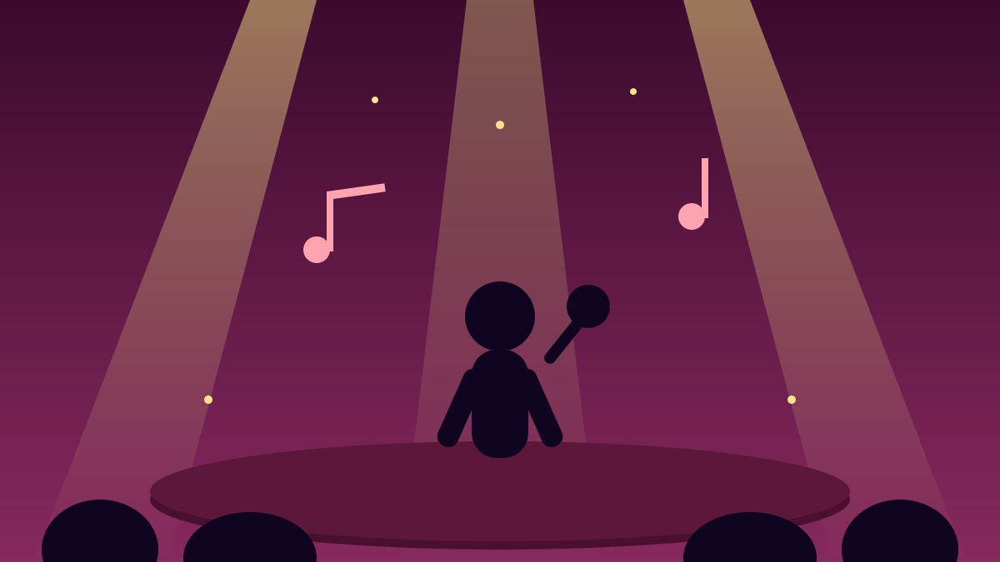

1 / 6

🎬 HIBURAN
Festival Paling Nostalgic Tahun Ini Udah Deket!
16–18 Oktober di Kemayoran — Momo manggung bareng Geisha lagi setelah bertahun-tahun pisah, plus girl group era 2000-an kumpul satu panggung. Geser buat spill lengkapnya →
2 / 6
🎤
Geisha "A Retrospective Journey"
Momo kembali satu panggung bareng Roby, Aan, Dhan, dan Nard — plus Regina. Dua era Geisha ketemu dalam satu pertunjukan spesial.
Ini jadi penampilan reuni yang paling dinanti di festival tahun ini.
3 / 6
👯
Girl group 2000-an reuni massal
Chibi Chibi, G String, Princesstale, Super Girlies, dan 7icons tampil bareng dalam satu panggung. Ditemani Agatha Pricilla, Febby Rastanty, Ify Alyssa, dan Sivia, dengan musik digarap Jebung.
Buat yang tumbuh besar nonton mereka di TV — ini momen core memory banget.
4 / 6
🎸
Bukan cuma nostalgia doang
Project Pop merayakan 30 tahun perjalanan karier mereka. Maliq & D'Essentials kolaborasi dengan Jakarta Movin di "Konser Musikal Senja Teduh Pelita".
Perunggu membawakan album "Dalam Dinamika" secara penuh, Pijar akhirnya reuni, dan ada "The Best of 80's Indonesian Pop Kreatif" bareng Ardhito Pramono, Isyana Sarasvati, Teddy Adhitya, Teza Sumendra, dengan arahan musik Nikita Dompas.
5 / 6
🎪
Catat: 16–18 Oktober, Kemayoran
Memasuki tahun ke-11, festival ini digelar 16, 17, dan 18 Oktober 2026 di Gambir Expo Kemayoran, Jakarta.
Temanya "It's Not Just A Festival, It's A Movement" — ngajak generasi baru ngerasain kenapa festival ini dibuat sejak awal.
6 / 6
🤔
Efeknya ke lo apa?
Tinggal hitungan hari! Buat Gen Z yang playlist-nya masih ada lagu Geisha atau dulu hafal koreo girl group 2000-an — ini kesempatan nyanyi bareng satu generasi.
Ajak circle lo, siapin outfit paling nyaman, dan jangan sampai nyesel cuma liat story orang. 🎶